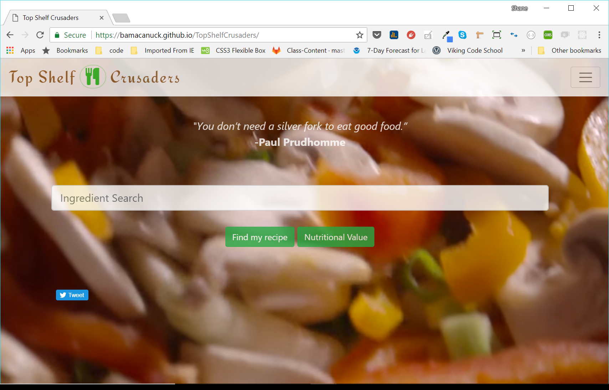
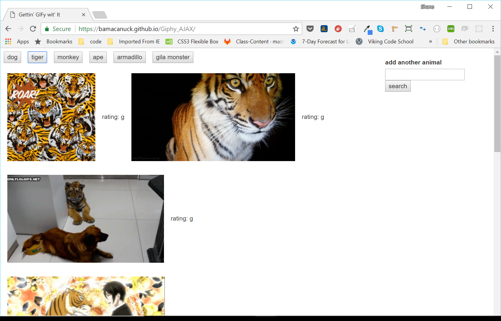
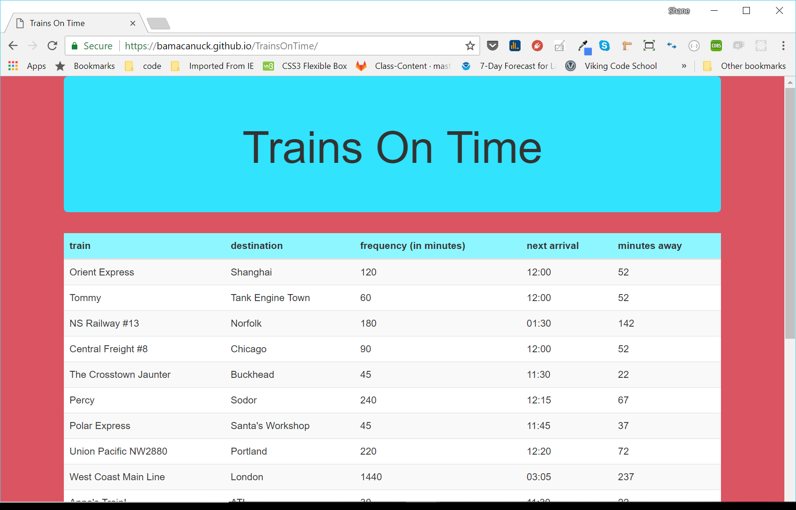

Portfolio

Top Shelf Crusaders - recipe app
This 'Top Shelf' app employs jQuery, AJAX, and Bootstrap, as well as the Edamam recipe/nutrition API.

My GIF Playground - Giphy tool
My GIF Playground makes use of asynchronous HTTP to retrieve animated images from the popular Giphy database, based on user input.

Trains on Time - scheduling application
Trains on Time is a real-time application, making use of the Moment.js library for its monitoring of (actual) time passage, and maintenance of pre-set and dynamically-added schedule elements.
Connect with Me